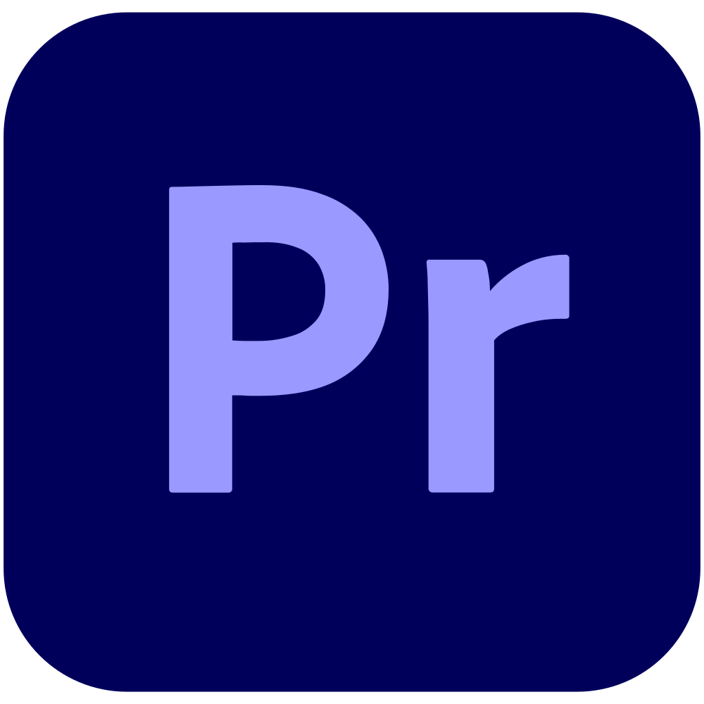

Outils et compétences
Suite Creative Cloud
Photoshop : retouche photo portrait appris en autodidacte et complément en formation
Lightroom : appris en autodidacte en amont de la retouche photo

Premiere Pro : D'abord en autodidacte pour le montage d'un clip vidéo tourné par mes soins, puis complément en formation. Peu de pratique, mais un réel engouement pour le montage vidéo
Aftereffects : Comme le montage vidéo, peu de pratique mais un réel intérêt pour la discipline
 Figma : principalement utilisé pour la partie arborescence d'un site web, zoning, wireframe, maquette graphique et prototypage. Je préfère Figma à Adobe xd
Figma : principalement utilisé pour la partie arborescence d'un site web, zoning, wireframe, maquette graphique et prototypage. Je préfère Figma à Adobe xd
 Illustrator : appris en formation, quelques mois de pratique, la Plume ne me fait pas peur!
Illustrator : appris en formation, quelques mois de pratique, la Plume ne me fait pas peur!
 Indesign : utilisé pour créer des flyer, des magasine, des présentations, des rapports. Ce n'est pas le logiciel que je préfère, mais je sais m'en servir!
Indesign : utilisé pour créer des flyer, des magasine, des présentations, des rapports. Ce n'est pas le logiciel que je préfère, mais je sais m'en servir!
Adobe xd : comme pour figma, utilisé pour la partie arborescence d'un site web, zoning, wireframe, maquette graphique et prototypage.
Lottie : animations au format json. J'ai eu l'occasion d'en étudier le fonctionnement et l'intégration. C'est un outil que j'aime beaucoup et qui permet de créer des animations et de les intégrer sur des pages web!
 HTML / CSS : Plusieurs sites web conçus : du one-page au site multipages, en passant par ce CV et en ajoutant le côté responsif
HTML / CSS : Plusieurs sites web conçus : du one-page au site multipages, en passant par ce CV et en ajoutant le côté responsif
 HTML / CSS : Plusieurs sites web conçus : du one-page au site multipages, en passant par ce CV et en ajoutant le côté responsif
HTML / CSS : Plusieurs sites web conçus : du one-page au site multipages, en passant par ce CV et en ajoutant le côté responsif
Javascript : je ne maitrise pas, mais le langage est intéressant et j'ai pris plaisir à l'utiliser pour l'intégrer dans des pages web mais aussi pour créer un jeu ShiFuMi en Javascript.
php : j'ai pratiqué ce langage il y a un moment, donc c'est à dépoussiérer! Mais j'ai de bonnes notions d'algorythmie qui rendrons la tâche moins ardue!
Wordpress / Elementor : j'ai développé plusieurs sites avec cet outil, dont un site e-commerce avec l'utilisation de Woo-commerce. J'ai survolé le builder Divi, mais j'ai préféré Elementor
 Wordpress / Elementor : j'ai développé plusieurs sites avec cet outil, dont un site e-commerce avec l'utilisation de Woo-commerce. J'ai survolé le builder Divi, mais j'ai préféré Elementor
Wordpress / Elementor : j'ai développé plusieurs sites avec cet outil, dont un site e-commerce avec l'utilisation de Woo-commerce. J'ai survolé le builder Divi, mais j'ai préféré Elementor
La suite Office : un outil très important dont je me suis beaucoup servi au cours de mon parcours professionnel.
Libre Office : une version open source concurrente à la suite Office. Je suis également à l'aise avec cette suite.